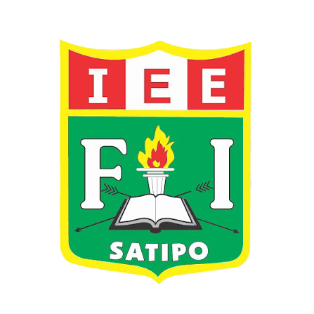
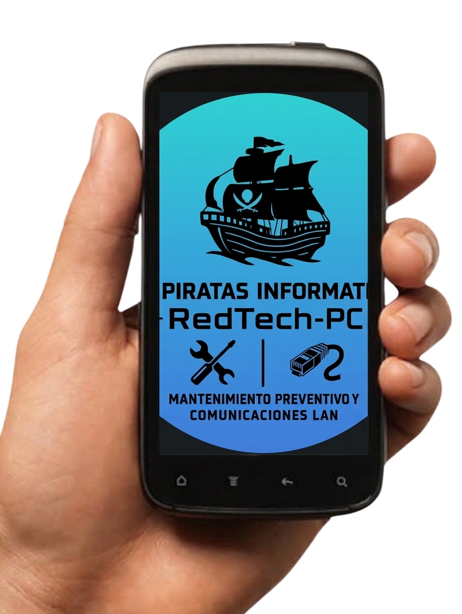

Nuestro proyecto “Juegos educativos de Mantenimiento de PC, a través de redes LAN”, surge con el propósito de innovar el aprendizaje en el ámbito educativo mediante el uso de juegos interactivos. La propuesta busca facilitar la comprensión de temas relacionados con el mantenimiento de computadoras, permitiendo que los estudiantes reconozcan componentes, herramientas, funciones y posibles fallas de una PC de una manera dinámica, práctica y entretenida. Desarrollado con HTML y CSS, el proyecto integra tecnología, creatividad y educación para fortalecer los conocimientos técnicos y las competencias digitales de los estudiantes.
es una propuesta educativa innovadora que utiliza juegos interactivos para facilitar el aprendizaje del mantenimiento de computadoras. Busca que los estudiantes reconozcan componentes, herramientas y posibles fallas de una PC de manera dinámica, práctica y entretenida, integrando tecnología y educación para fortalecer sus competencias digitales.

Detective

Juego de mantenimiento de PC

Pc Master 3D.jpeg

Pc Hero.jpegs

PC DOCTOR

PUPILETRAS

PC PUZZLE

PC WORKSHOP

REDTECH

SIMULADOR DE MANTENIMIENTO
Hemos desarrollado RED-TECH-PC, una propuesta web educativa que utiliza juegos interactivos para facilitar el aprendizaje del mantenimiento de computadoras. La plataforma presenta contenidos y actividades de manera organizada, dinámica y atractiva, permitiendo que los estudiantes aprendan a reconocer componentes, herramientas, funciones y posibles fallas de una PC mientras ponen a prueba sus conocimientos. La solución está diseñada con HTML y CSS, buscando que sea accesible desde diferentes dispositivos y que contribuya a mejorar la experiencia de aprendizaje mediante la tecnología y la gamificación.
Interfaz moderna e intuitiva desarrollada con HTML y CSS, diseñada para que los estudiantes puedan navegar fácilmente por los contenidos y juegos relacionados con el mantenimiento de computadoras.
La plataforma se adapta a computadoras, tablets y teléfonos celulares, permitiendo que los estudiantes puedan acceder a los juegos y contenidos educativos desde diferentes dispositivos.
Utilizamos la tecnología y la gamificación como herramientas para transformar el aprendizaje tradicional, haciendo que los contenidos de mantenimiento de computadoras sean más atractivos, participativos y fáciles de comprender.

DOCENTE TUTOR
Líder coordinadora

Evaluadora

Diseñador

Investigadora

Creadora

Celular 966589092.
Wasap 9665C89092.